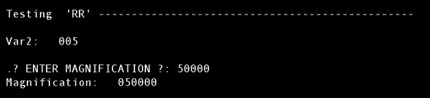

| .OPERATION: | RR [var1],[var2],[var3] | ; Read (Set) Register variables |
| .VALUE(S): | 4., 5, 6 | ; Register variable values |
| . | ||
| .OPERATION: | RR [mag] | ; Query interactive input from inside procedure |
| .? ENTER MAGNIFICATION ? | 50000 |
| TERMINAL SCREEEN CAPTURE |
|---|
|  |
| rr_term |